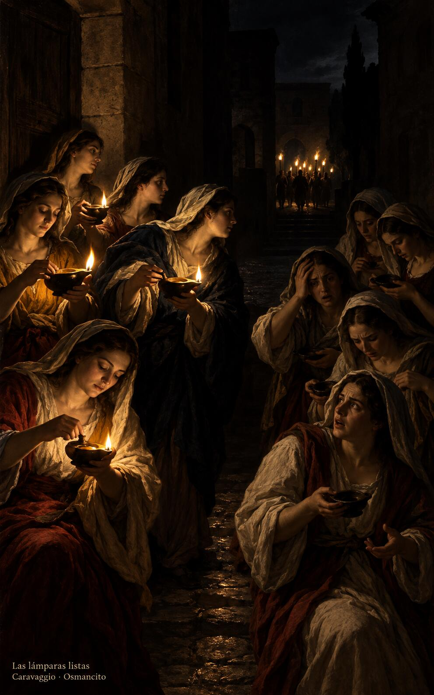
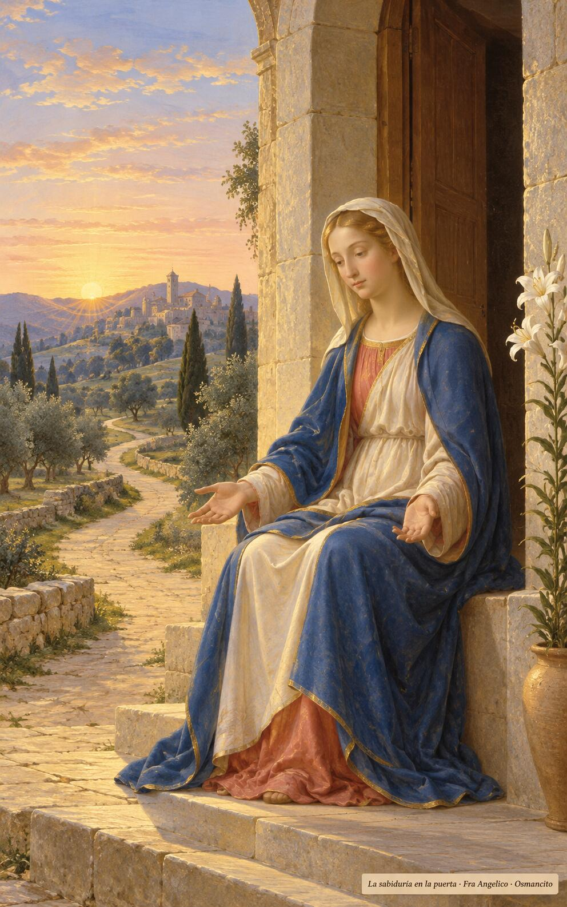

8 de noviembre de 2026
¡Buenos días!
Lámparas en la noche
29
Radiante e incorruptible es la sabiduría.
Sabiduría 6,12. Fuente
Que madruguemos por la sabiduría y la hallemos sentada a la puerta. Que tengamos las lámparas listas y el aceite guardado, despiertos en la noche larga, sin saber el día ni la hora. Que no nos pese la espera ni nos duerma la costumbre: venga el esposo y nos encuentre de pie, con la mecha encendida y el corazón alegre, seguros de que los que se durmieron en él despertarán primero, y entremos al banquete.

- Cinco jóvenes avivan sus lámparas encendidas mientras las otras despiertan a oscuras: Mateo 25, la prudencia que no se compra a última hora.

- La sabiduría aguarda sentada en el umbral al primer resplandor: Sabiduría 6, la que sale al encuentro del que madruga.
¡Feliz domingo 8 de noviembre!
😊🙋♂
© 2026 Osmancito